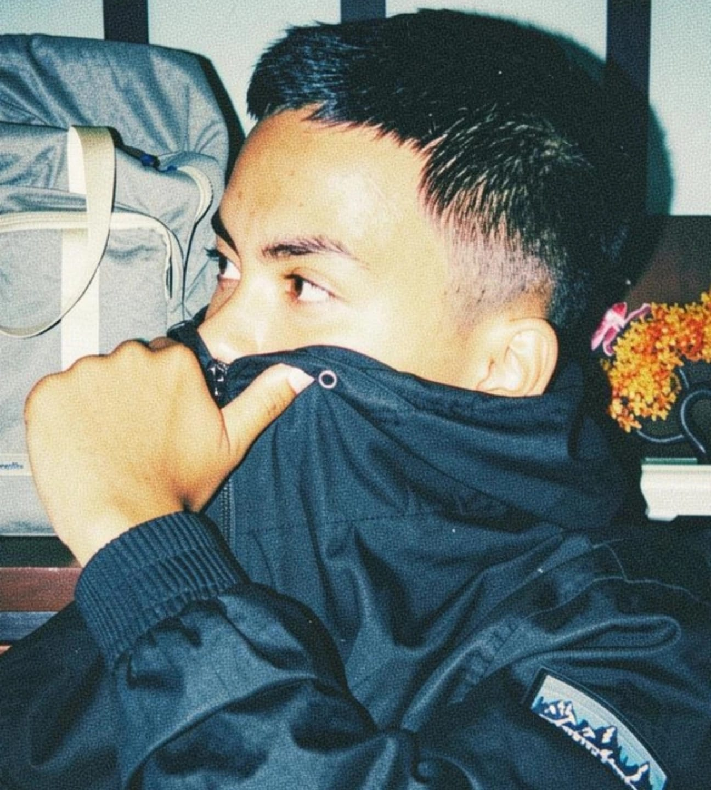

TECHNOLOGY • NETWORKING • FUTURE
Saya adalah siswa kelas XII TKJ yang memiliki ketertarikan terhadap komputer, jaringan, teknologi, dan dunia digital. Saya terus belajar untuk meningkatkan kemampuan dan mempersiapkan diri menghadapi dunia kerja.

GET TO KNOW ME
Perkenalkan, nama saya Rafa Alviano Septian. Saya merupakan siswa kelas XII TKJ 1 di SMK Yadika 13 Tambun.
Saya memilih jurusan Teknik Komputer dan Jaringan karena saya memiliki ketertarikan terhadap komputer, networking, hardware, dan teknologi.
Selama sekolah saya mempelajari berbagai hal seperti perakitan komputer, jaringan LAN, konfigurasi MikroTik, serta pembuatan website menggunakan HTML dan CSS.
Saya ingin terus mengembangkan kemampuan saya agar dapat menjadi pribadi yang disiplin, bertanggung jawab, mandiri, dan siap memasuki dunia kerja.
Rafa Alviano Septian
XII TKJ 1
Teknik Komputer & Jaringan
Tambun, Bekasi
WHAT I LEARN
Perakitan komputer, pemasangan RAM, motherboard, harddisk, PSU dan komponen lainnya.
Membuat kabel LAN, konfigurasi jaringan, IP address dan troubleshooting koneksi.
Praktik konfigurasi MikroTik menggunakan WinBox dari level dasar sampai level lanjutan.
Membuat website menggunakan HTML dan CSS serta memahami dasar desain web.
MY EXPERIENCE
HARDWARE
Merakit komputer dengan memasang berbagai komponen hardware seperti motherboard, RAM, harddisk dan power supply.
HARDWARENETWORKING
Membuat kabel jaringan menggunakan kabel UTP dan konektor RJ45 kemudian melakukan pengujian koneksi jaringan.
NETWORKINGMIKROTIK
Melakukan praktik konfigurasi jaringan menggunakan MikroTik dan aplikasi WinBox dari level satu sampai level empat.
MIKROTIKWEB DESIGN
Membuat website portfolio pribadi sebagai media untuk menampilkan profil, kemampuan, pendidikan dan pengalaman.
HTML / CSSMY JOURNEY
Menempuh pendidikan tingkat SMP dan menyelesaikan pendidikan pada tahun 2024.
Saat ini menempuh pendidikan SMK jurusan Teknik Komputer dan Jaringan (TKJ).
WHEN I'M NOT CODING
Bermain bola adalah salah satu kegiatan yang saya sukai. Selain menyenangkan, olahraga ini mengajarkan kerja sama, kekompakan, disiplin dan sportivitas.
LET'S CONNECT
Jika ingin mengenal saya lebih jauh, berdiskusi mengenai teknologi, atau ingin bekerja sama, silakan hubungi saya.
rafalviano98@email.com0877-5570-7313
@rfaalvian._
Tambun, Bekasi, Jawa Barat